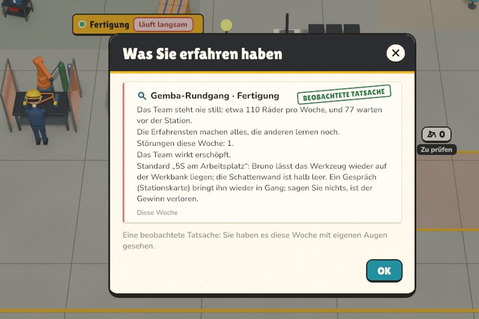
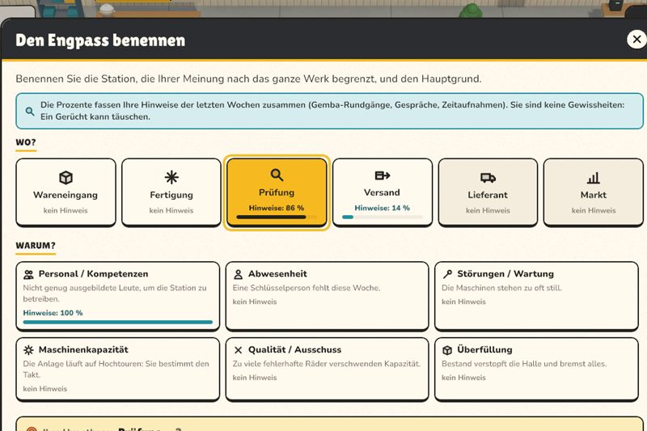
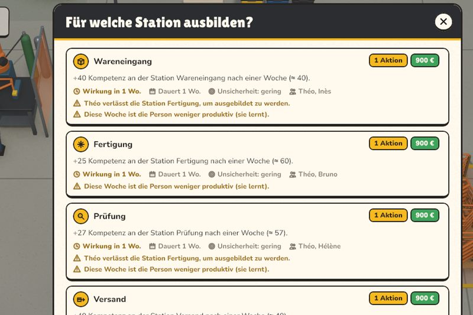
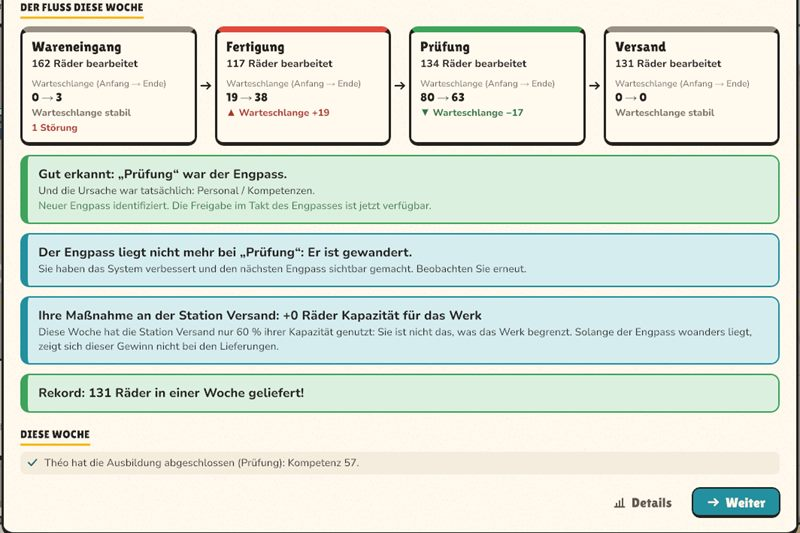
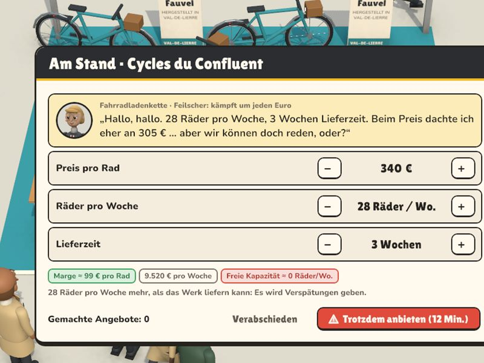
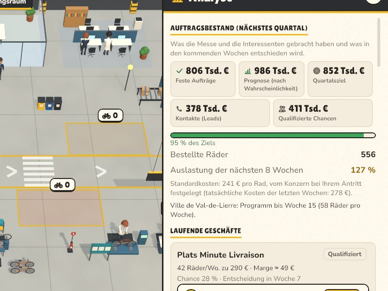
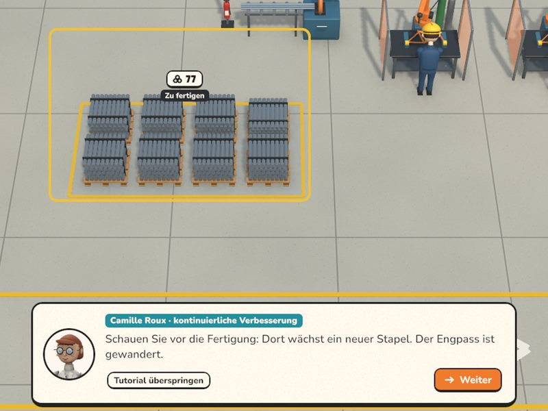
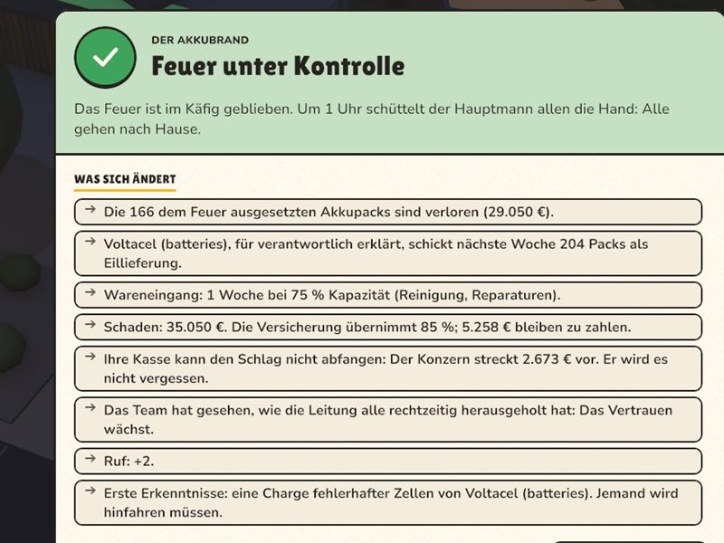

Werk 1 · Die Werkstatt
Finden, was wirklich bremst
Eine kleine Werkstatt, die zu spät liefert. Bei Ihrer Ankunft wartet schon ein Gerücht: ihm folgen oder nachprüfen?

Paletten stapeln sich, Lkw warten, Teams sind erschöpft. Sie leiten ein Fahrradwerk: Finden Sie heraus, was es wirklich begrenzt, und beheben Sie es, ohne alles kaputtzumachen.
Jede Woche folgt demselben Faden. Sie schauen hin, verstehen, entscheiden – dann läuft das Werk vor Ihren Augen und gibt Ihnen Antwort.

Rundgang vor Ort (Gemba), Gespräche, Zeitaufnahmen. Was Sie mit eigenen Augen sehen, wird zur Tatsache; ein Gerücht bleibt ein Gerücht – und ist manchmal eine falsche Fährte.

Sie benennen die Station, die das ganze Werk begrenzt, und die Ursache: Personal, Abwesenheiten, Störungen, Maschinenkapazität, Qualität, Platzmangel. Das Urteil fällt am Ende der Woche.

Schulen, einstellen, jemanden versetzen, Überstunden, Wartung, im Takt des Engpasses freigeben. Jeder Hebel kostet Zeitfenster, Geld oder Zeit – und manche wirken erst in der Woche darauf.

Die Räder wandern Station für Station, Stunde für Stunde. Die Bilanz zeigt, ob Sie richtig lagen, was Ihre Entscheidungen in Zahlen verändert haben und wohin der Engpass gewandert ist.
Der Fluss des Nationalen Werks an einem Dienstag um 15:50 Uhr, aus einer echten Partie: was jede Station seit Montag geschafft hat und was zwischen ihnen wartet.
Wischen Sie über den Fluss, um alle Stationen zu sehen →
Der größte Bestand liegt nicht unbedingt vor dem Schuldigen.
Der größte Haufen liegt im Materiallager. Fall gelöst? Schauen Sie lieber, was jede Station seit Montag wirklich geschafft hat. Im Spiel geht man erst vor Ort, bevor man urteilt.
Manchmal muss man das Büro verlassen. Diese Momente werden persönlich gespielt, alles mit der Maus: Man redet, verhandelt, verspricht – und was dort geschieht, kommt später zurück.


Eine gute Entscheidung heute kann Ihr Problem von morgen werden.
Das Spiel merkt sich, was Sie unterschreiben, versprechen und entscheiden. Ein Beispiel aus einer Partie:

Ein Einkäufer will 28 Räder pro Woche, geliefert innerhalb von drei Wochen, und feilscht um jeden Euro. Das Spiel warnt: Es gibt keine freie Kapazität mehr.

Die Geschäfte von der Messe entscheiden sich Woche für Woche. Das Auftragsbuch füllt sich: 127 % Auslastung in den nächsten acht Wochen.

Das Werk bekommt mehr, als es schaffen kann. Vor der langsamsten Station bildet sich eine Schlange, und die Verspätungen häufen sich.
Verspätungen, Kunden, die warnen, bevor sie gehen, Überstunden, die das Team zermürben. Unterschreiben war eine gute Idee; das Versprechen zu halten ist eine andere Arbeit.

Jede Beförderung führt Sie in ein größeres Werk, mit einem Problem anderer Art: Was vorher funktionierte, reicht nicht mehr. Sie nehmen ein paar Vertrauenspersonen mit.
Eine kleine Werkstatt, die zu spät liefert. Bei Ihrer Ankunft wartet schon ein Gerücht: ihm folgen oder nachprüfen?

Eine Montagelinie, Abwesenheiten von Tag zu Tag, zertifizierte Schweißfachkräfte. Vertretungen und Einarbeitung, dann die Fahrradmesse, um das Auftragsbuch zu füllen.

Ein erfahrenes Team, das Sie nicht kennt, eine launische Lackierkabine, verlorene Stunden bei jedem Farbwechsel. Und ein Betriebsklima, das man im Auge behalten muss.

Das Aushängeschild des Konzerns. Die Akkus kommen mit drei Wochen Lieferzeit, das Dashboard sagt „konform“, während die Werkstatt etwas anderes sagt, und der Kunde kommt zum Audit.

Gebrauchte Räder in jedem Zustand, ohne Etikett. Es sieht nach fehlenden Händen aus; man muss sortieren, Kits vorbereiten, einen Standard festlegen.

Lastenräder nach Maß, Eilaufträge am laufenden Band, jede Abteilung beschuldigt die nächste. Reaktive oder geglättete Planung, ein Bestand, der Geld bindet. Dann die Konzernzentrale.
Das Spiel öffnet sich mit einem persönlichen Schlüssel, den Sie zusammen mit dem Link zu dieser Seite erhalten. Noch keinen Schlüssel? Fragen Sie einen an.
Immer die neueste Testversion.
Windows Installieren und starten
Erscheint „Der Computer wurde durch Windows geschützt“: „Weitere Informationen“, dann „Trotzdem ausführen“. Damit Sie es leicht wiederfinden: Rechtsklick auf FactoryDirector, „Senden an“, „Desktop (Verknüpfung erstellen)“ (unter Windows 11 zuerst „Weitere Optionen anzeigen“).
Mac Installieren und starten: Vorher nichts herunterladen, diese Zeile erledigt alles.
curl -fsSL https://zarkyxxx.github.io/factory-director/installer-mac.sh | shStarten Sie FactoryDirector danach über „Programme“ oder das Launchpad. Warum das Terminal: Das Spiel ist nicht von Apple signiert, und macOS blockiert ein unsigniertes Spiel, das über den Browser geladen wurde; mit dieser Zeile installiert, öffnet es sich direkt.
Laden Sie das Mac-ZIP herunter. Falls es sich nicht von selbst geöffnet hat, doppelklicken Sie in den Downloads darauf. Ziehen Sie FactoryDirector in „Programme“ und öffnen Sie es. Schließen Sie die Sperrmeldung, öffnen Sie dann Systemeinstellungen, Datenschutz & Sicherheit; klicken Sie ganz unten auf „Dennoch öffnen“ und bestätigen Sie. Nur einmal nötig: Updates aus dem Spiel heraus werden nicht mehr blockiert.
Fügen Sie beim ersten Start den Schlüssel ein, den Sie mit dem Link zum Spiel erhalten haben, zum Beispiel
FD-7KQ2-MX9P-4TRW
und klicken Sie auf „Aktivieren“. Dafür ist dieses eine Mal eine Internetverbindung nötig. Das Spiel öffnet sich, und der Schlüssel bleibt gespeichert: Danach läuft es auch offline.
Danach aktualisiert sich das Spiel selbst: Wenn eine neue Version erscheint, bietet das Menü „Aktualisieren“ an. Kein erneutes Herunterladen oder Installieren nötig; Ihr Schlüssel und Ihre Spielstände bleiben erhalten.
Ein Schlüssel ist persönlich: Er lässt sich auf höchstens zwei Computern aktivieren (zum Beispiel einem Desktop-PC und einem Laptop). Darüber hinaus wird er abgelehnt; wenn Sie den Computer wechseln, bitten Sie die Person, die ihn Ihnen gegeben hat, ihn freizugeben.
Schlüssel werden einzeln vergeben. Schreiben Sie in ein paar Worten, warum Sie das Spiel ausprobieren möchten: Das Team antwortet Ihnen per E-Mail.